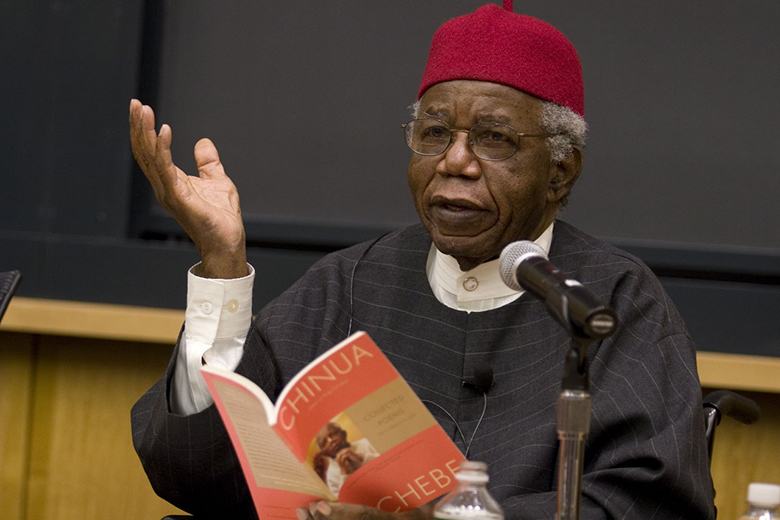

Dr Chinua Achebe at a talk on his Autobiography.
"In whose company the prison walls fall down"
Read more on his Wikipedia entry
key aspects of Chinua's life.
- Born in South Eastern Nigeria on 16 Nov 1930.
- Won a scholarship to study medicine but changed to English Literature after reading the book Mister Johnson, disliking the way Africans were portrayed thereby losing his scholarship.
- He started writing short stories as a University Student and served as Editor of Campus magazine, Herald from 1951-1952.
- He taught for while & moved on to work at the Nigerian Broadcasting Service in 1956
- In 1958 he sent his novel to various publishing houses in London and was rejected by many saying African fiction had no potential. It eventually caught the eye of an educational adviser at Heinemann and He said "this is the best novel i have read since the war."
- Heinemann went on to publish 2,000 copies of the book.
- Things fall Apart would go on to sell over 20 million copies worldwide, translated to 57 languages and became 1 of the most sought after books in African Literature.
- Once in a bus in Zambia, he sat in the Whites only section. When questioned by the ticket taker he said "I come from Nigeria and in the bus we sit where we like."
- He would go on to publish several other books winning prizes and honorary degrees.
- In 1990 Achebe was involved in an accident that would paralyze him from the waist down.
- He would later become a Professor of Languages & Literature at Bard College, New York.
- In 2012, his last book "There was a country was released" and caused a stir re-opening discussions about the Nigerian Civil War.
- He passed away on 21 March 2013. He was described by the New York Times as one of the most widely read novelists & one of the continents towering men of letters.